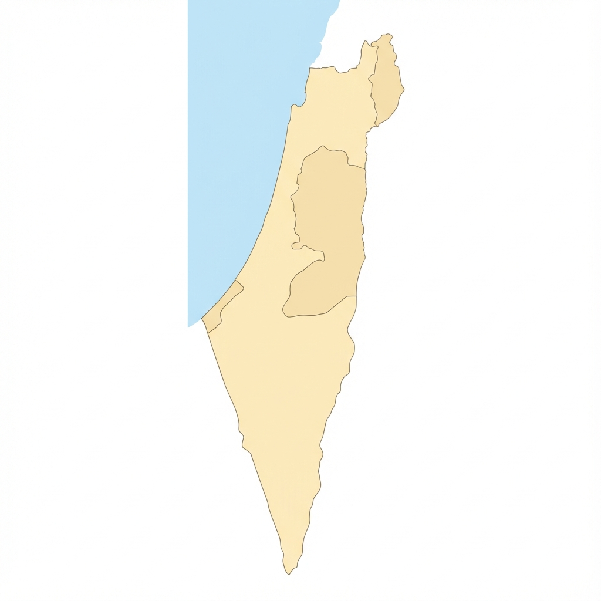

דוח אינטראקטיבי: אכיפה ואלימות בספורט
קליניקה לחופש מידע | נתוני 2021-2025
תמונת מצב אכיפה (עונת 24/25)
415
קנסות מנהליים
398
מורחקים מהמגרשים
2
תיקי גזענות בלבד
110
תיקי אלימות שנפתחו
פער אדיר בין כמות הקריאות הגזעניות (367) לבין תיקי חקירה שנפתחו בנושא
(2 בלבד).
אפקטיביות האכיפה (סיכוי לכתב אישום)
שיאני הגזענות (עונת 24/25)
חקר נתונים: פרופיל העבריין (נתוני אמת)
סה"כ: 0 מקרים
אנא בחר פרמטרים להצגת נתונים.
חריגת גיל בעבירות אלימות
באופן חריג, קבוצת הגיל המובילה בתקיפות בחיפה היא
31-40.
מקור: נתוני מעצרים 2021-2025
הפרות סדר: מעורבות בוגרת
בת"א, עבירות סדר ציבורי מאפיינות בעיקר גילאי 30+.
מקור: נתוני מעצרים 2021-2025
שיאנית הכניסות האסורות
ב"ש מובילה עם 9 מקרי פריצה למגרש, כולם ע"י צעירים (18-25).
מקור: נתוני מעצרים 2021-2025
צעירים (18-21) נגד שוטרים
בירושלים, הקבוצה הבולטת ביותר בחיכוך עם המשטרה הם הצעירים.
מקור: נתוני מעצרים 2021-2025
קבוצת הסיכון המרכזית
ברמה ארצית, גילאי 22-25 אחראים ל-36% מכלל המעצרים.
מקור: נתוני מעצרים 2021-2025
אלימות שוטרים: תמונת מצב
9 אירועי אלימות שוטרים
עונת 24/25כולל פגיעת רימון עשן בילד שפונה לבי"ח.
כשלים מערכתיים
היעדר נתונים על קבוצות אוכלוסייה
המשטרה ומח"ש לא מפלחות מתלוננים/נפגעים לפי מוצא (חסם בזיהוי שיטור יתר).
דיווח לקוי בדוחות פעולה
שדות השימוש בכוח אינם "שדות חובה", המידע נרשם בטקסט חופשי וקשה לניתוח.
מצלמות גוף
נושא מרכזי בבקשת חופש המידע. נוהל קיים אך האכיפה לגביו לא שקופה.
טיפול מערכתי (מח"ש)
תלונות למח"ש (2022)
3,249
נחקרו באזהרה
468
כתבי אישום שהוגשו
69
מקרי בוחן (סמי עופר ובלומפילד)
מקור: מרכז המחקר והמידע של הכנסת (2024), עמ' 2-3
- אירוע סמי עופר (21.2.22): 2 תלונות נסגרו (חוסר ראיות).
- אירוע בלומפילד (26.9.23): 2 תלונות נסגרו (נסיבות).
- בשני המקרים: אין אינדיקציה לשימוש במצלמות גוף.
התפלגות מעצרים: 10 העבירות השכיחות ביותר (2021-2025)
מפת המעצרים הארצית
גודל הבועה מייצג את כמות המעצרים בעיר

בחר נושאים לבקשה:
א. מצלמות גוף (חובה)
נתונים על הפעלה/אי-הפעלה, שמירת חומרים ונהלים.
נתונים על הפעלה/אי-הפעלה, שמירת חומרים ונהלים.
ב. אלימות שוטרים במגרשים
מספר דוחות שימוש בכוח ספציפית ביציעים.
מספר דוחות שימוש בכוח ספציפית ביציעים.
ג. פילוח דמוגרפי (הצעה)
ניסיון לחלץ נתונים על אכיפת יתר כלפי מיעוטים.
ניסיון לחלץ נתונים על אכיפת יתר כלפי מיעוטים.
ד. הרחקות מנהליות (הצעה)
יחס בין הרחקות לכתבי אישום (מדד שרירותיות).
יחס בין הרחקות לכתבי אישום (מדד שרירותיות).